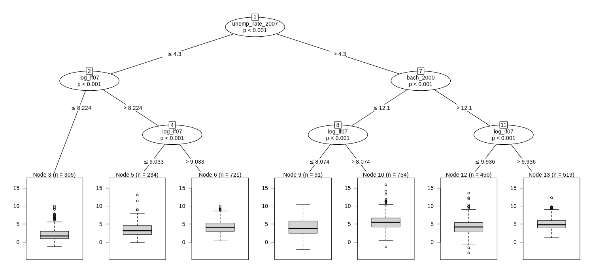
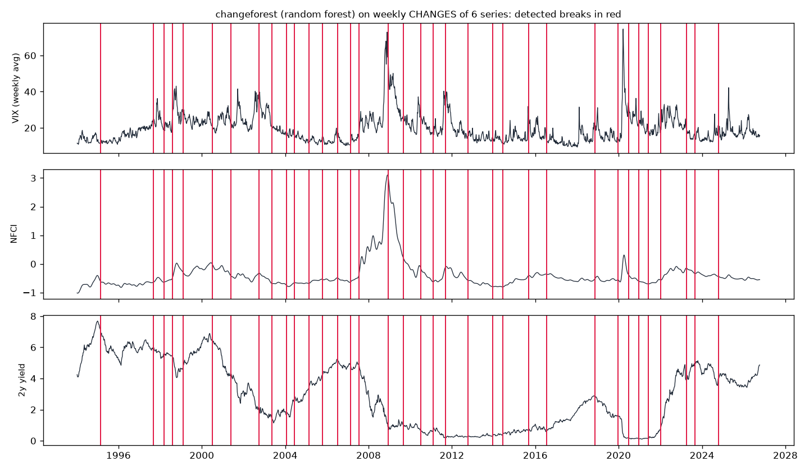
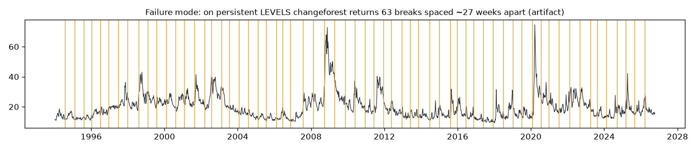
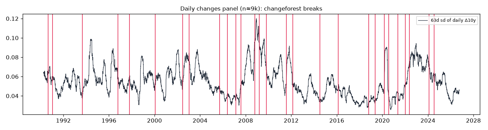
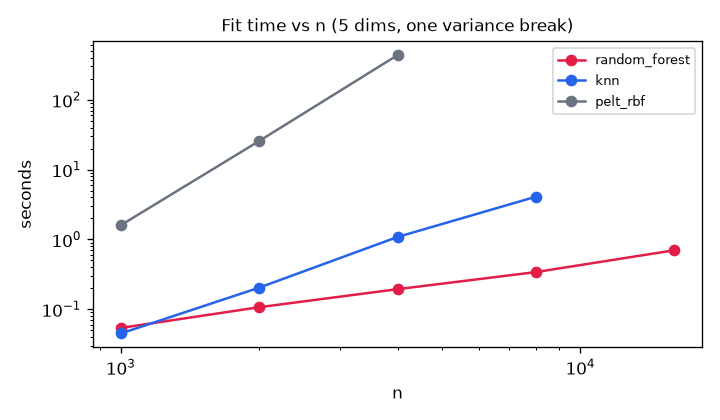

Methods scout
Two lesser-known, fast, interpretable methods, each run three-plus ways on our own data. No neural nets.
The short version
- partykit · ctree + MOB adopt-candidate. The trees are as readable as promised and very fast (300 bootstrap refits in 3.6s). The best result is the MOB tree: one NFCI split explains the changing sensitivity of credit spreads to VIX shocks better than a calendar break does. As a forecaster of 6-month spread changes, ctree lost to the plain historical mean, but less badly than CART or OLS.
- changeforest (Rust, Python and R bindings) interesting. It finds breaks in volatility and correlation that a mean-change method misses entirely, returns zero breaks on shuffled data, and scales close to linearly (16k rows in 0.7s). But it assumes independent rows within a segment. On persistent levels it produced 63 breaks spaced ~27 weeks apart, which is an artifact, and even on changes the break count moves between 32 and 47 across seeds.
partykit: conditional inference trees + model-based recursive partitioning
Citations. Hothorn, Hornik & Zeileis (2006), "Unbiased Recursive Partitioning: A Conditional Inference Framework", JCGS 15(3):651–674. Zeileis, Hothorn & Hornik (2008), "Model-Based Recursive Partitioning", JCGS 17(2):492–514. Hothorn & Zeileis (2015), "partykit: A Modular Toolkit for Recursive Partytioning in R", JMLR 16:3905–3909. Package: cran.r-project.org/package=partykit (v1.2.29; small Innsbruck/Zurich team; linear statistics computed in C via libcoin).
Why it's unusual. CART picks the split variable by greedy impurity reduction, which favours variables with many possible cut points. ctree separates variable selection from cut-point search and does the selection with a permutation test, so it has a built-in stopping rule (no pruning) and isn't biased toward continuous variables. MOB goes further: every node holds a small parametric model, here a regression, and a node splits only when that model's coefficients are statistically unstable along some partitioning variable. That turns a tree into an interpretable map of where a relationship changes.
The math in plain terms
For each candidate covariate \(X_j\), ctree computes a linear association statistic with the response, using influence functions \(h\) and transformations \(g\):
Here \(\mu_j\) and \(\Sigma_j\) are the exact mean and covariance under permutation (Strasser–Weber). It picks the variable with the smallest Bonferroni-adjusted p-value and stops when none is below \(\alpha\). Only then does it search for the best binary cut in that one variable. MOB fits \(y=x^\top\beta\) in a node, orders the score contributions \(\psi(y_i,x_i,\hat\beta)\) by each partition variable \(z_j\), and tests the cumulative score process for parameter instability (an M-fluctuation test). It splits on the most unstable \(z_j\).
Analysis 1a · Credit-stress regime tree, and does it forecast?
Monthly panel from 1991-01 to 2026-03 (423 months). Target: the change in the Gilchrist–Zakrajšek (GZ) credit spread over the next 6 months. Features observed at month end: VIX, 10y–2y slope, NFCI, 2y yield, 12-month change in the 2y, excess bond premium, 12-month change in the mortgage rate, and the past 3-month GZ change. A full-sample fit takes 25 ms.

| Leaf (regime) | Months | Mean 6-mo change in GZ spread (pp) | SD | Share widening > 50bp | First | Last |
|---|---|---|---|---|---|---|
| VIXCLS > 31.9 | 24 | -1.40 | 1.08 | 0% | 1997-11 | 2025-04 |
| VIXCLS ≤ 31.9 & NFCI ≤ -0.0634 & DGS2 ≤ 0.376 | 44 | -0.25 | 0.26 | 0% | 2010-10 | 2021-09 |
| VIXCLS ≤ 31.9 & NFCI ≤ -0.0634 & DGS2 > 0.376 | 330 | 0.06 | 0.43 | 13% | 1991-03 | 2026-03 |
| VIXCLS ≤ 31.9 & NFCI > -0.0634 | 25 | 0.92 | 1.65 | 56% | 1991-01 | 2009-11 |
What it shows. The root split is VIX ≈ 32. Above it, spreads tighten by about 1.4pp over the next 6 months: after a panic, they mean-revert. The dangerous regime is calm VIX with NFCI already above about −0.06. That's 25 months, all between 1991 and 2009, with a +0.92pp average widening and a 56% chance of more than 50bp. The ZIRP leaf (2y yield ≤ 0.38) is the steady-tightening era.
Walk-forward test. Refit every 12 months from 2004 onward, training only on rows whose 6-month target was fully observed at refit time (267 out-of-sample months).
| Model | OOS R² vs expanding mean | MAE (pp) | Corr(pred, actual) |
|---|---|---|---|
| ctree (α=0.05, depth≤3, minbucket 24) | -0.31 | 0.578 | -0.14 |
| CART (rpart, CV-pruned) | -0.40 | 0.645 | -0.08 |
| OLS, same 8 features | -0.43 | 0.665 | -0.03 |
| Expanding historical mean | 0.00 | 0.477 | -0.33 |
| Era | Months | ctree | CART | OLS |
|---|---|---|---|---|
| 2004-09 | 72 | -0.32 | -0.30 | -0.26 |
| 2010-19 | 120 | -0.46 | -0.97 | -1.23 |
| 2020-26 | 75 | 0.27 | -0.47 | -1.02 |
None of the models beats the expanding mean overall. Overlapping 6-month targets and very few stress episodes make this a hard target, and that is the honest answer. ctree degrades least, and it is the only model with a positive OOS R² in 2020–26 (0.27), where CART and OLS overfit badly. The tree is useful as a description of regimes, not as a spread forecaster.
Analysis 1b · Are the regimes stable?
| Training window | Months | Root split | Threshold | Leaves |
|---|---|---|---|---|
| 1990-2007 | 204 | T10Y2Y | 2.026 | 2 |
| 2008-2026 | 219 | VIXCLS | 27.342 | 4 |
| full | 423 | VIXCLS | 31.942 | 4 |
| Root variable | Share of 300 block-bootstrap refits | Threshold p10 / p50 / p90 |
|---|---|---|
| VIXCLS | 68.3% | 27.164 / 31.93 / 35.065 |
| NFCI | 13.0% | -0.225 / -0.068 / 0.051 |
| ebp | 9.0% | -0.184 / 0.815 / 1.107 |
| DGS2 | 6.7% | 1.372 / 2.782 / 6.083 |
| dDGS2_12 | 1.0% | -2.046 / -1.402 / -0.188 |
| dGZ_3 | 1.0% | -0.447 / -0.217 / 0.278 |
| dMORT_12 | 0.7% | -0.393 / -0.377 / -0.361 |
| (none) | 0.3% | — |
On the full sample and on post-2008 data, VIX is the root. Before 2008 the slope (10y–2y ≤ 2.03) is the root. In 300 moving-block bootstrap refits (24-month blocks), VIX is the root 68% of the time, with the cut between 27.164 and 35.065 (p10–p90). So the "VIX ≈ 30" boundary is robust and the deeper splits are not. All 300 refits took 3.6s, which makes this kind of stability check cheap enough to run every night.
Analysis 1c · MOB: where does the spread-to-VIX link change?
Model in each node: \(\Delta GZ_t=\beta_0+\beta_1\,\Delta VIX_t+\beta_2\,\Delta y^{10}_t+\varepsilon_t\). Candidate partition variables: slope, NFCI, the 2y level, and calendar time, so a plain structural break gets a fair chance. Settings: α = 0.01, min 36 months, 440 months, fitted in 67 ms.

| Regime | Months | Intercept | β on ΔVIX | β on Δ10y yield |
|---|---|---|---|---|
| Pooled OLS (no split) | 440 | -0.0014 | 0.0432 | -0.1576 |
| NFCI ≤ 0.057 | 404 | -0.0028 | 0.0293 | -0.1252 |
| NFCI > 0.057 | 36 | -0.0384 | 0.0587 | -0.4444 |
| Partition variable | Fluctuation statistic | p-value (Bonferroni) |
|---|---|---|
| T10Y2Y | 14.31 | 0.197 |
| NFCI | 46.14 | < 0.00001 |
| DGS2 | 19.53 | 0.024 |
| time | 8.89 | 0.829 |
What it shows. Once financial conditions are tight (NFCI > 0.057, 36 months), credit spreads respond about twice as strongly to VIX shocks (β 0.029 → 0.059), and about 3.5× as strongly, with negative sign, to 10y yield moves: the flight-to-quality channel. The instability test rejects strongly for NFCI and not for calendar time (p = 0.83). So the relationship shifts with financial conditions, not with era. BIC improves from -350 to -514. Caveat: this is contemporaneous and descriptive, not a forecast.
Analysis 1d · Cross-section: which counties took the biggest unemployment shocks?
County panel (Drive Sheet), 3,074 counties with complete data. Two shocks: Great Recession (unemployment rate 2010 minus 2007) and COVID (2020 minus 2019). Pre-shock covariates: unemployment rate, 6-year GDP growth, rural–urban code, metro flag, share with a bachelor's degree, and log labour force.


Great Recession, 2007→2010
| Leaf | Counties | Mean Δ unemployment rate (pp) | SD |
|---|---|---|---|
| unemp_rate_2007 ≤ 4.3 & labour force 2007 ≤ 3,730 | 305 | 2.20 | 1.85 |
| unemp_rate_2007 ≤ 4.3 & labour force 2007 > 3,730 & labour force 2007 ≤ 8,378 | 234 | 3.45 | 1.92 |
| unemp_rate_2007 > 4.3 & bach_2000 ≤ 12.1 & labour force 2007 ≤ 3,211 | 91 | 4.05 | 2.74 |
| unemp_rate_2007 ≤ 4.3 & labour force 2007 > 3,730 & labour force 2007 > 8,378 | 721 | 4.23 | 1.75 |
| unemp_rate_2007 > 4.3 & bach_2000 > 12.1 & labour force 2007 ≤ 20,652 | 450 | 4.25 | 2.08 |
| unemp_rate_2007 > 4.3 & bach_2000 > 12.1 & labour force 2007 > 20,652 | 519 | 5.00 | 1.66 |
| unemp_rate_2007 > 4.3 & bach_2000 ≤ 12.1 & labour force 2007 > 3,211 | 754 | 5.53 | 2.00 |
| Model | 5-fold CV RMSE (pp) | CV R² |
|---|---|---|
| Mean | 2.138 | 0.000 |
| ctree | 1.930 | 0.185 |
| CART | 1.926 | 0.189 |
| OLS | 1.912 | 0.200 |
COVID, 2019→2020
| Leaf | Counties | Mean Δ unemployment rate (pp) | SD |
|---|---|---|---|
| labour force 2019 ≤ 14,657 & labour force 2019 ≤ 2,303 & unemp_rate_2019 ≤ 5 | 257 | 1.10 | 1.39 |
| labour force 2019 ≤ 14,657 & labour force 2019 > 2,303 & labour force 2019 ≤ 6,164 | 656 | 2.14 | 1.53 |
| labour force 2019 ≤ 14,657 & labour force 2019 ≤ 2,303 & unemp_rate_2019 > 5 | 54 | 2.57 | 2.22 |
| labour force 2019 ≤ 14,657 & labour force 2019 > 2,303 & labour force 2019 > 6,164 | 751 | 2.67 | 1.25 |
| labour force 2019 > 14,657 & labour force 2019 ≤ 154,980 & labour force 2019 ≤ 22,590 | 364 | 2.94 | 1.19 |
| labour force 2019 > 14,657 & labour force 2019 ≤ 154,980 & labour force 2019 > 22,590 | 771 | 3.39 | 1.26 |
| labour force 2019 > 14,657 & labour force 2019 > 154,980 & labour force 2019 ≤ 425,434 | 150 | 4.27 | 1.32 |
| labour force 2019 > 14,657 & labour force 2019 > 154,980 & labour force 2019 > 425,434 | 71 | 5.34 | 1.75 |
| Model | 5-fold CV RMSE (pp) | CV R² |
|---|---|---|
| Mean | 1.592 | 0.000 |
| ctree | 1.377 | 0.251 |
| CART | 1.370 | 0.259 |
| OLS | 1.341 | 0.290 |
What it shows. The two shocks have different shapes. The Great Recession tree splits first on pre-shock unemployment (≤ 4.3%), then on education and size. The worst group is already-weak, low-degree-share counties (+5.5pp). The COVID tree splits only on county size: the largest counties (labour force above about 426k) rose 5.34pp against 1.1pp in the smallest low-unemployment ones. In 5-fold CV the tree is within 0.02–0.04 R² of OLS (OLS wins narrowly), so you trade a little accuracy for a breakdown you can read at a glance.
Timing on 30,740 rows (county table replicated 10×): ctree 0.07s, rpart 0.30s, lmtree 13.5s. Caveat: rpart was grown to cp = 0.001 and ctree to depth 3, so this is not a like-for-like race. MOB is the slow part because it refits a model at every candidate node.
Limitations
- Time-series rows are serially dependent, but the permutation tests assume exchangeable rows, so p-values on monthly data are optimistic. Use the block bootstrap (1b) as the real stability check.
- Single trees are high-variance below the root. Report root splits and bootstrap frequencies, not deep leaves.
- Regime trees describe the data. They did not forecast 6-month spread changes out of sample.
Verdict: adopt-candidate. Use MOB as the default "where does this relationship change?" tool on our panels, with a block-bootstrap stability table attached. It's also a natural interpretable comparison for any regime claim.
changeforest: random-forest change-point detection (Rust core)
Citation. Londschien, Bühlmann & Kovács (2023), "Random Forests for Change Point Detection", JMLR 24(216):1–45. Code: github.com/mlondschien/changeforest, crates.io/crates/changeforest, PyPI (v1.2.1; essentially a single-maintainer Rust crate with thin Python and R bindings, which is the same architecture TRACE uses).
Why it's unusual. Most change-point tools assume a parametric segment model (a mean or variance shift) or rely on distances and ranks that break down as dimension grows. changeforest turns change-point detection into classification. If a random forest can tell "before \(s\)" from "after \(s\)" better than chance, there is a break at \(s\). Any distributional change counts, including a change in correlation, with no parametric assumption.
The math in plain terms
For a segment \((u,v]\) and a candidate split \(s\), fit a classifier labelling rows as left or right of \(s\), and take the out-of-bag probabilities \(\hat p_i\) that row \(i\) is on the left. The classifier log-likelihood-ratio gain is
The gain is about 0 when the forest can't beat the class prior. Rather than refitting at every \(s\), it fits at the ¼, ½ and ¾ points, reads approximate gain curves off those three fits, and refits once at the best guess. That's why it's fast: roughly O(n log n) per segment times a constant number of forests. Segments are found by (seeded) binary segmentation, and each split is kept only if a permutation test on the gain passes.
Analysis 2a · Weekly regime segmentation (6 series, 1994–2026)
Weekly changes in log VIX, the 10y–2y slope, the 2y yield, the 30y mortgage rate, NFCI and STLFSI4: 1,709 weeks × 6, z-scored, segmented in 0.41s.

All 36 segments (volatility, correlation and average level)
| Segment | Weeks | SD Δlog VIX | SD Δ2y (pp) | SD ΔNFCI | Corr(ΔVIX, Δ2y) | Avg VIX | Avg NFCI |
|---|---|---|---|---|---|---|---|
| 1994-01-14 → 1995-02-10 | 57 | 0.086 | 0.114 | 0.019 | 0.44 | 13.8 | -0.70 |
| 1995-02-17 → 1997-08-29 | 133 | 0.068 | 0.104 | 0.009 | 0.22 | 16.1 | -0.70 |
| 1997-09-05 → 1998-02-27 | 26 | 0.122 | 0.094 | 0.015 | -0.45 | 24.9 | -0.56 |
| 1998-03-06 → 1998-07-31 | 22 | 0.085 | 0.048 | 0.005 | 0.25 | 20.9 | -0.58 |
| 1998-08-07 → 1999-01-29 | 26 | 0.119 | 0.133 | 0.037 | -0.62 | 31.0 | -0.16 |
| 1999-02-05 → 2000-06-23 | 73 | 0.065 | 0.089 | 0.014 | 0.10 | 24.1 | -0.20 |
| 2000-06-30 → 2001-05-18 | 47 | 0.081 | 0.099 | 0.018 | -0.52 | 24.0 | -0.19 |
| 2001-05-25 → 2002-09-27 | 71 | 0.092 | 0.138 | 0.016 | -0.51 | 25.9 | -0.45 |
| 2002-10-04 → 2003-05-09 | 32 | 0.069 | 0.124 | 0.007 | -0.37 | 29.1 | -0.48 |
| 2003-05-16 → 2004-01-16 | 36 | 0.061 | 0.098 | 0.006 | -0.28 | 18.6 | -0.68 |
| 2004-01-23 → 2004-06-04 | 20 | 0.093 | 0.101 | 0.010 | -0.09 | 16.6 | -0.74 |
| 2004-06-11 → 2005-02-11 | 36 | 0.066 | 0.077 | 0.003 | -0.37 | 14.3 | -0.67 |
| 2005-02-18 → 2005-10-07 | 34 | 0.059 | 0.073 | 0.005 | 0.08 | 12.8 | -0.59 |
| 2005-10-14 → 2006-06-30 | 38 | 0.080 | 0.050 | 0.007 | -0.04 | 13.1 | -0.55 |
| 2006-07-07 → 2007-02-09 | 32 | 0.070 | 0.067 | 0.006 | -0.36 | 12.1 | -0.57 |
| 2007-02-16 → 2007-07-06 | 21 | 0.123 | 0.073 | 0.005 | -0.52 | 13.8 | -0.55 |
| 2007-07-13 → 2008-12-05 | 74 | 0.109 | 0.163 | 0.088 | -0.45 | 28.2 | 0.83 |
| 2008-12-12 → 2009-08-28 | 38 | 0.074 | 0.097 | 0.049 | -0.27 | 37.0 | 1.46 |
| 2009-09-04 → 2010-07-02 | 44 | 0.114 | 0.061 | 0.033 | -0.38 | 23.5 | -0.14 |
| 2010-07-09 → 2011-02-04 | 31 | 0.066 | 0.041 | 0.011 | -0.01 | 20.9 | -0.42 |
| 2011-02-11 → 2011-09-02 | 30 | 0.137 | 0.063 | 0.023 | -0.60 | 21.1 | -0.52 |
| 2011-09-09 → 2012-10-05 | 57 | 0.092 | 0.023 | 0.019 | -0.24 | 22.1 | -0.33 |
| 2012-10-12 → 2013-12-06 | 61 | 0.099 | 0.026 | 0.008 | 0.15 | 14.8 | -0.68 |
| 2013-12-13 → 2014-06-06 | 26 | 0.094 | 0.029 | 0.003 | -0.52 | 14.1 | -0.79 |
| 2014-06-13 → 2015-08-28 | 64 | 0.146 | 0.046 | 0.009 | -0.40 | 14.9 | -0.61 |
| 2015-09-04 → 2016-07-08 | 45 | 0.124 | 0.060 | 0.011 | -0.24 | 18.3 | -0.38 |
| 2016-07-15 → 2018-11-02 | 121 | 0.140 | 0.042 | 0.007 | -0.33 | 13.3 | -0.52 |
| 2018-11-09 → 2019-12-13 | 58 | 0.118 | 0.073 | 0.011 | -0.50 | 16.5 | -0.55 |
| 2019-12-20 → 2020-06-19 | 27 | 0.208 | 0.106 | 0.081 | -0.55 | 30.8 | -0.23 |
| 2020-06-26 → 2020-12-11 | 25 | 0.103 | 0.014 | 0.008 | -0.13 | 26.4 | -0.50 |
| 2020-12-18 → 2021-05-28 | 24 | 0.111 | 0.011 | 0.002 | 0.06 | 21.5 | -0.65 |
| 2021-06-04 → 2021-12-31 | 31 | 0.114 | 0.038 | 0.007 | -0.37 | 18.5 | -0.63 |
| 2022-01-07 → 2023-03-31 | 65 | 0.109 | 0.175 | 0.017 | -0.04 | 24.6 | -0.26 |
| 2023-04-07 → 2023-08-25 | 21 | 0.065 | 0.124 | 0.005 | 0.03 | 15.9 | -0.23 |
| 2023-09-01 → 2024-10-11 | 59 | 0.124 | 0.102 | 0.007 | 0.09 | 15.2 | -0.38 |
| 2024-10-18 → 2026-10-09 | 104 | 0.130 | 0.076 | 0.008 | 0.01 | 18.4 | -0.50 |
What it shows. The breaks are in volatility and co-movement, not in means: change_in_mean finds 0 breaks on the same data. The highest-volatility segments are the ones you'd expect (2007-07 → 2008-12, 2019-12 → 2020-06, 2022-01 → 2023-03), but the stock–rate correlation is the more useful output. The correlation between VIX changes and 2y changes ranges from -0.62 to +0.44 across segments. It is strongly negative in risk-off windows (bad news means lower yields) and near zero or positive from 2022-01 onward, when inflation made rates and risk sell off together. That is the textbook stock–bond correlation flip, recovered without supervision from six public series.
Analysis 2b · How robust are the breaks? Comparison with baselines
| Check | Result |
|---|---|
| Breaks found (random forest, default control) | 35 |
| Break count over 10 seeds | 35, 32, 41, 39, 36, 39, 47, 32, 38, 37 |
| Breaks reproduced (±13 weeks) in ≥ 8 of 10 seeds | 28 of 35 |
| …and in ≥ 5 of 6 drop-one-series refits | 20 of 35 |
| Fit on first 70% only: breaks found / share of full-sample breaks reproduced | 31 / 76% |
| kNN classifier instead of random forest | 14 breaks (mostly 2008–12 and 2022–23) |
| change_in_mean (parametric baseline) | 0 breaks |
| Binary segmentation, RBF kernel, same break count: share of RF breaks matched | 57% |
| Binary segmentation, L2 (mean), same break count: share matched | 29% |
| k-means on rows, k = segments: label switches over time | 1529 (vs 35 for changeforest) |
| Row-shuffled weekly data (no true break), 5 runs | 0, 0, 0, 0, 0 breaks |
| Row-shuffled daily data, 3 runs | 0, 0, 0 breaks |
What it shows. On shuffled data, where no break exists, it finds zero breaks every time, so the permutation test isn't trigger-happy under independence. But the exact break count is seed-dependent (32–47). Only 28 of 35 breaks reproduce in at least 8 of 10 seeds, and 20 also survive dropping any one series. Those 20 are the ones to trust. k-means on the same rows flips label 1529 times, so it produces noise rather than regimes, which is why a segmentation method is the right tool here. Kernel binary segmentation agrees on about 57% of breaks at the same count, but it needs the count supplied, while changeforest chooses it.

Analysis 2c · Daily scale and speed
Daily changes in log VIX, the slope, the 2y and the 10y from 1990 to 2026: 9,174 days × 4, segmented in 1.19s, with 28 breaks (change_in_mean: 0).

All 29 daily segments
| Segment | Days | SD Δ10y (pp) | SD Δlog VIX | Corr(Δlog VIX, Δ10y) |
|---|---|---|---|---|
| 1990-01-03 → 1990-08-24 | 163 | 0.063 | 0.084 | 0.19 |
| 1990-08-27 → 1991-01-17 | 98 | 0.060 | 0.053 | 0.58 |
| 1991-01-18 → 1993-08-30 | 654 | 0.051 | 0.053 | 0.10 |
| 1993-08-31 → 1996-10-11 | 781 | 0.065 | 0.057 | 0.42 |
| 1996-10-15 → 1997-10-22 | 255 | 0.052 | 0.045 | 0.34 |
| 1997-10-23 → 2000-01-25 | 562 | 0.057 | 0.062 | -0.07 |
| 2000-01-26 → 2002-06-18 | 596 | 0.060 | 0.053 | -0.25 |
| 2002-06-19 → 2003-01-10 | 141 | 0.080 | 0.061 | -0.53 |
| 2003-01-13 → 2005-09-21 | 675 | 0.058 | 0.046 | -0.06 |
| 2005-09-22 → 2006-05-30 | 170 | 0.040 | 0.056 | 0.06 |
| 2006-05-31 → 2007-02-26 | 185 | 0.037 | 0.058 | -0.00 |
| 2007-02-27 → 2007-08-06 | 112 | 0.045 | 0.091 | -0.34 |
| 2007-08-07 → 2008-10-21 | 303 | 0.078 | 0.077 | -0.49 |
| 2008-10-22 → 2009-03-10 | 94 | 0.103 | 0.084 | -0.33 |
| 2009-03-11 → 2009-10-29 | 161 | 0.080 | 0.048 | -0.12 |
| 2009-10-30 → 2011-08-02 | 439 | 0.062 | 0.070 | -0.46 |
| 2011-08-03 → 2012-02-16 | 135 | 0.073 | 0.093 | -0.56 |
| 2012-02-17 → 2014-07-09 | 596 | 0.045 | 0.066 | -0.30 |
| 2014-07-10 → 2016-02-19 | 403 | 0.050 | 0.086 | -0.37 |
| 2016-02-22 → 2018-10-17 | 666 | 0.038 | 0.077 | -0.24 |
| 2018-10-18 → 2019-05-10 | 139 | 0.036 | 0.077 | -0.42 |
| 2019-05-13 → 2020-03-05 | 204 | 0.047 | 0.088 | -0.45 |
| 2020-03-06 → 2020-07-17 | 93 | 0.075 | 0.103 | -0.38 |
| 2020-07-20 → 2021-05-07 | 201 | 0.037 | 0.075 | 0.07 |
| 2021-05-10 → 2022-01-03 | 164 | 0.045 | 0.090 | -0.30 |
| 2022-01-04 → 2022-05-18 | 94 | 0.067 | 0.086 | -0.07 |
| 2022-05-19 → 2024-02-05 | 426 | 0.078 | 0.053 | 0.13 |
| 2024-02-06 → 2024-07-16 | 111 | 0.058 | 0.049 | 0.26 |
| 2024-07-17 → 2026-10-02 | 553 | 0.049 | 0.089 | -0.01 |
At daily frequency the VIX–10y correlation is positive in 7 segments: 1990-01→1990-08, 1990-08→1991-01, 1991-01→1993-08, 1993-08→1996-10, 1996-10→1997-10, 2022-05→2024-02, 2024-02→2024-07. These are the pre-2000 regime and 2022–24, which matches the weekly result.

| n (5 dims) | random_forest (s) | RF breaks | knn (s) | knn breaks | ruptures PELT-RBF (s) |
|---|---|---|---|---|---|
| 1000 | 0.054 | 500 | 0.045 | 1 | 1.6 |
| 2000 | 0.107 | 1000 | 0.204 | 0 | 25.7 |
| 4000 | 0.194 | 2006 | 1.085 | 20 | 436.2 |
| 8000 | 0.341 | 4003 | 4.093 | 16 | not run |
| 16000 | 0.700 | 8009 | not run | — | not run |
What it shows. The random-forest variant is close to linear (n = 16,000 in 0.70s) and lands on the true break every time. The kNN variant is fast but over-segmented the synthetic variance break badly at n ≥ 4,000. Exact kernel PELT (ruptures, RBF) took 436s at n = 4,000 and, at the penalty I set (10·log n), missed the break. That penalty is my choice, not a property of PELT, but the quadratic cost is real.
Limitations
- Assumes independent rows within a segment. Persistent series must be differenced, or you get artifacts (see 2b).
- Break counts are seed-sensitive. Report the multi-seed core set, not a single run.
- It says when the distribution changed, not what changed. Pair it with per-segment summaries, as above, or with a MOB tree using segment ID as a partitioning variable.
- The kNN classifier option is unreliable at large n in my test.
Verdict: interesting. It's worth keeping as the unsupervised "when did the regime change" step ahead of MOB or TRACE-style explanations. The Rust core plus thin bindings matches our stack. Not an adopt-candidate yet, because of seed sensitivity. Next step: a multi-seed consensus wrapper.
Logged for later
fastcpd · R/C++
Fast change-point detection via sequential gradient descent (Li & Zhang). v1.0.0, June 2026. Parametric (GLM, ARMA, GARCH) segment costs: the natural parametric counterpart to changeforest.
stablelearner · R
Stability assessment for trees and other learners (Philipp, Strobl, Zeileis et al.). Would replace my hand-rolled bootstrap table in 1b.
glmertree · R
MOB with random effects (Fokkema & Zeileis). The right tool for the county panel, where state-level clustering should not drive the splits.
evtree · R
Globally optimal trees by evolutionary search (Grubinger, Zeileis, Pfeiffer; JSS 2014). Answers whether greedy trees miss a better regime split.
augurs · Rust
Time-series toolkit (changepoints, outliers, DTW clustering, MSTL), v0.10.3. A Rust building block to check against changeforest.